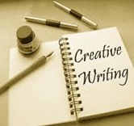

|
Creative Writing Classes Through the courtesy of the Surrey Arts Council, I will be the writer in residence at the new Newton Cultural Centre at 13530 72nd Ave, Surrey, BC, V3W 2P1. I will be there every Monday, starting January 3, 2011, from 10 AM to noon. This centre is near the intersection of King George and 72nd Ave. It’s in a converted fire hall, across from McDonalds. There’s ample parking, but it’s best to approach the centre from the west, since 72nd has a barrier in the middle of the street there. For example, enter 72nd from 132nd Street and drive toward King George. It’ll be on your right, just before King George. All are welcome. Bring your stories, articles, novels, poems, whatever and I will try to help you toward publication. No appointment necessary. Come for the writing, but enjoy the art. All of these courses count toward your diploma in creative writing, issued by the Fraser Valley Writers School, Ed Griffin and David Blinkhorn. One hour of class time = one credit toward a diploma. Sixty (60) hours, credits, needed for a diploma. Right now the only required course is the Introduction to Creative Writing.All of these courses are
at the Newton Cultural Centre.
To sign up for any of these courses, please call 604-594-2700 between 9:30 AM to 3:00 PM or leave a voice mail. Email = info@artscouncilofsurrey.ca. Don’t delay. Courses taught by Ed
Griffin,
writing instructor in Surrey and at Matsqui prison. ed@edgriffin.net Seminar / Workshop Six weeks course, $75.00. Monday, November 7, 11:30 to 1:30 to Monday, December 12, 11:30 to 1:30 This class will workshop student writing projects. It will cover subjects in more depth: point of view, the hero’s journey, character, plot, setting, figures of speech, marketing in a changing world, the rules of writing and subjects of concern to students The Hero’s Journey Learn techniques used by the ancient Greeks and modern Hollywood producers to create exciting stories. Take your hero or heroine on an adventure. The map is already there, developed by the work of Joseph Campbell. In this workshop you will learn the theory, but then apply it to your story. Ed Griffin, Cost = $35.00 Monday, January 16 –Hero’s Journey, 11:30 to 1:30 Monday, January 23 – Hero’s Journey, 11:30 to 1:30 Character Development The most important thing for a writer to learn is character development. We all remember famous characters from movies and books. Learn the techniques, learn how to bring life to your characters and take them through the character arc. Bring your characters to class (at least the stories they’re in.) Ed Griffin, Cost = $35.00 Monday, January 30 – Character Development, 11:30 to 1:30 Monday, February 6 – Character Development, 11:30 to 1:30 Marketing in the Digital Age The world of publishing is changing. For us beginning writers, it’s a wonderful time with lots of opportunity. This workshop will help you design a plan for yourself. Bring your ideas and dreams. The instructor and your fellow students will help you bring your dreams to reality. Ed Griffin, Cost = $35.00 Monday, February 13 - Marketing in the Digital Age, 11:30 to 1:30 Monday, February 20 - Marketing in the Digital Age, 11:30 to 1:30 Point of View No subject in writing has more big words associated with it than point of view. Ignore the big words and see the amazing opportunities this subject can bring to you. Play with some un-thought-of perspectives. Ed Griffin, Cost = $35.00 Monday, February 27 - Point of View, 11:30 to 1:30 Monday, March 5 - Point of View, 11:30 to 1:30 Neglected Subjects Make some money writing Greeting Cars. Get your feelings out with Slam Poetry. Play with those wonderful figures of speech, like “the bees buzzed” or Shakespeare’s "All the world's a stage" or "a sea of troubles.” Ed Griffin, Cost = $35.00 Monday, April 9 – Figures of Speech/Slam Poetry/Greeting Cards, 11:30 to 1:30 Monday, April 16 - Figures of Speech/Slam Poetry/Greeting Cards, 11:30 to 1:30 Critique Group In two working sessions, we will praise, discuss, and suggest each other’s manuscripts. You must send a section of your work (around 1500 words) to the instructor by April 15. ed@edgriffin.net Prepare to work hard, yet have fun. Ed Griffin, Cost = $35.00 Monday, April 23 – Critique Group, 11:30 to 1:30 Monday, April 30 – Critique Group, 11:30 to 1:30 Courses taught by Caszie
Schoeber,
writer and E-book specialist. caszie@itmustbetold.ca E-books for Writers: When the e-book was created, the world of writing and publishing vastly changed. If you’ve ever wanted to publish, now is the time. In this two-day class, you’ll learn about the world of e-books and the opportunities it offers for writers in the publishing world. You’ll also learn how to format and publish your own work and where to upload it online. If you can, please bring a laptop to class as we will be preparing an example document. It is also recommended that you have a version of Microsoft Word and a Text Editor (e.g.Notepad) on your computer. If you do not, please contact the instructor at caszie@itmustbetold.ca Caszie Schoeber, Cost = $35.00 Wednesday, January 25, 10 AM to Noon Wednesday, February 1, 10 AM to Noon Social Media for Writers: So, you've heard of Twitter, Facebook, and Blogs? Great! Now, what are you supposed to do with them? This intensive four-hour session will cover the basics of Twitter, Facebook, and Blogs. You will also learn how writers can use these social media tools to promote their work, interact with readers, sell their books, and build a solid platform. There will be a short pause for lunch. Caszie Schoeber, Cost = $35.00 Saturday, January 28, 2012, 10 AM to 2PM Publishing on Smashwords: Interested in self-publishing an e-book? If you have a computer and Microsoft Word then the tools are right at your finger tips. In this two-hour session, you'll learn how to set-up your Word document in order to easily publish on Smashwords and get your work fast-tracked to companies like Barnes and Noble, Apple, Sony, and Amazon. If you can, please bring a laptop to class as we will be preparing an example document. It is also recommended that you have a version of Microsoft Word and a Text Editor (e.g.Notepad) on your computer. If you do not, please contact the instructor at caszie@itmustbetold.ca. Caszie Schoeber, Cost = $17.50 Saturday, February 18, 10 AM to Noon Publishing on Kindle: Learn how to publish your e-book on Amazon, one of the widest distributors of E-books in the world. This two-hour session will show you how to set up your Microsoft Word document and upload it onto Kindle Direct Publishing through Mobipocket Creator. This class is a follow up to "Publishing on Smashwords" though it can be taken as a stand alone class if you wish. If you can, please bring a laptop to class as we will be preparing an example document . It is also recommended that you have a version of Microsoft Word and a Text Editor (e.g. Notepad) on your computer. If you do not, please contact the instructor at caszie@itmustbetold.ca. Caszie Schoeber, Cost = $17.50 Saturday, March 10, 2012, 10AM to Noon. Facebook for Writers: The possibilities of Facebook are endless. You can keep in touch with friends and family, follow your favorite artists or teams, or even promote and sell your work. In this two-hour session, learn how to create an author and/or book page, as well as develop some techniques to get those pages to sell your work. We will also touch on how to create a book trailer as a promotional tool for your book. Caszie Schoeber, Cost = $17.50 Saturday, April 14, 2012, 10 AM to Noon. Blogging for Writers: With the virtual explosion of e-books and social media sites, readers now want to correspond with and keep track of their favorite authors. What better way to interact than with a blog? In this two-hour session, we will cover how to set up a free blog using Wordpress, as well as how to build an audience and use your blog to promote your work. Caszie Schoeber, Cost = $17.50 This class will run on Saturday, April 21, 2012, from 10AM to Noon. Courses taught by David
Blinkhorn,
SFU writers studio grad, author and poet. dwbhome@hotmail.com The Writer’s Toolbox Every writer needs the tools to make that story sparkle, to make the reader come back again and again. This eight-week course takes an in-depth look at the issues of conflict, pacing, plot, dialogue and setting through the use of lecture, writing exercises, critiquing and discussion. David Blinkhorn, Cost = $165.00 Eight (8) Thursdays commencing January 19, 2012 and ending March 8, 2012. 10:00 a.m. to Noon.  Self-Editing
and Revision Self-Editing
and RevisionLearn the tools to identify ways to improve the first draft of your writing. Through the use of examples and your own work, the course will teach the effective steps in self-editing and revision. A must for the writer wanting to take their work to the next level. David Blinkhorn, Cost = $100.00 Four (4) Wednesdays commencing February 15, 2012 to March 7, 2012 10:00 a.m. to Noon Mystery/Thriller Boot Camp Ever read a mystery or a thriller you couldn’t put down? Do you dream of creating your own? This course covers the basics of writing a mystery or thriller including techniques in plotting, building suspense and tension, and creating memorable characters. Learn the tricks to put you on the road to high octane writing. David Blinkhorn, Cost = $125.00 Six (6) Thursdays commencing April 5, 2012 to May 10, 2012 10:00 a.m. to Noon Introduction to Creative Writing – Evening Course It’s time to start writing: your life story, the novel you’ve dreamed about, the poetry and songs that are in your heart, the article you want to write, or perhaps a stageplay. No more excuses. Learn the techniques to conquer your inner critic. Now is the time. The subjects covered will include: ways to unleash your creativity, character, plot, poetry, article writing, novels, short stories, marketing, and the rules of writing. Student work will occupy one half of class time. David Blinkhorn, Cost = $125.00 * Course manual required and available from the instructor for $18.00. Eight (8) Thursdays --- January 19, 2012 to March 8, 2012 -- 7:00 p.m. to 8:45 p.m. Courses taught by Lois
Peterson,
creative writing teacher and author of four children’s books. Memoirs: Your Story, Your Way In this informative, interactive workshop you will use writing exercises, discussion and checklists to articulate the theme of your memoir, create a structure, and identify and develop compelling scenes and stories. You'll also explore research strategies for ensuring authenticity, and discuss options for marketing and publishing your story, your way. Lois Peterson Cost = $60.00 Saturday, February 11, 10 AM to 4 PM To sign up for any of these courses, call 604-594-2700 between 9:30 AM to 3:00 PM or leave a voice mail. Email = info@artscouncilofsurrey.ca. Don’t delay. To contact the Fraser Valley Writers School – fvwschool@gmail.com |